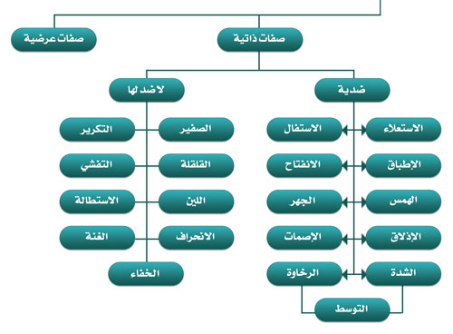

الصفات جمع صفة، والصفة لغةً: ما قام بالشيء من المعاني كالسواد والبياض، واصطلاحًا: كيفية تثبت للحرف عند النطق به فتميزه عن غيره من الأحرف.
اختلف العلماء في عدد الصفات، فذهب الجمهور إلى أنها سبعة عشر صفة وهي المذكورة في المقدمة الجزرية، وأنقصها بعضهم إلى أربعة عشر صفة، وزادها بعضهم إلى ما فوق الأربعين.
قال عثمان مراد في السلسبيل الشافي:
صفـاتُ أحرفِ الهِجا سَبْعَ عَشَرْ
مِنهـنَّ خَمْسٌ ضِدَّ خَمْسٍ تُشْتَهَرْ
فائدة: عدد الصفات عند احتساب صفة التوسط هو 18 صفة.
درجة اعتماد الحرف المنطوق على عضوي النطق لدفع هواء الزفير باتجاه الحبلين الصوتيّين يؤثر على درجة اهتزاز الحبلين الصوتيّين نتيجة قوّة أو ضعف الاعتماد على المخرج، وعلى درجة الإعاقة للهواء الحامل للصوت بحسب طبيعة المخرج ودرجة انغلاقِه.
تنقسم صفات الحروف إلى:

هي الصفات الملازمة لذات الحرف ولا تنفك عنه أبدًا وتنقسم إلى:
لا بد أن يتصف كل حـرف من حروف الهجاء بخمس صفات من الصفات التالية:
قال ابن الجزري في الجزرية:
صِفَاتُهَـا جَـهْرٌ وَرِخْوٌ مُسْتَـفِـلْ
مُنْفَـتِـحٌ مُصْمَـتَـةٌ وَالـضِّدَّ قُلْ
مَهْمُوسُهَـا (فَحَثَّـهُ شَخْـصٌ سَـكَـتْ)
شَدِيْـدُهَا لَفْـظُ (أَجِـدْ قَـطٍ بَـكَـتْ)
وَبَيْـنَ رِخْـوٍ وَالشَّدِيدِ ( لِـنْ عُمَـرْ)
وَسَبْعُ عُلْوٍ (خُصَّ ضَغْـطٍ قِـظْ) حَصَـرْ
وَصَـادُ ضَـادٌ طَاءُ ظَـاءٌ مُطْبَـقَهْ
وَ(فِـرَّ مِـنْ لُـبِّ) الحُرُوفِ المُذْلَقَلـهْ
الاستعلاء لغةً: العلو، واصطلاحًا: ارتفاع أقصى اللسان إلى الحنك الأعلى عند النطق بالحرف؛ وحروفه هي: (خص ضغط قظ)، وتكون في حروفه المتحرك منها والساكن، وبعض هذه الحروف أقوى من بعض في هذه الصفة على قدر ما في الحرف من صفات القوة فالطاء أقواها يليها الصاد والضاد والظاء ثم يكون أقل عند القاف ثم يضعف عند الخاء والغين.
قال عثمان مراد في السلسبيل الشافي:
رَفْـعُ اللسانِ بالحـروفِ استعلا
وقال ابن الجزري في الجزرية:
وَسَبْعُ عُلْوٍ (خُصَّ ضَغْـطٍ قِـظْ) حَصَـرْ
وقال السَّمنَّودي في لآلئ البيان:
وَ(خُصَّ ضَغْطٍ قظْ) للِاِسْتِعْـلَا اسْتَقَـرْ
الاستفال لغةً: الانخفاض، واصطلاحًا: انخفاض أقصى اللسان عن الحنك الأعلى عند النطق بالحرف؛ وحروفه هي: باقي الحروف، وتكون في حروفه المتحرك منها والساكن.
قال عثمان مراد في السلسبيل الشافي:
رَفْـعُ اللسانِ بالحـروفِ استعلا
وخَفْضُهُ بِها استِفالُ يُجلَى
الإطباق لغةً: الإلصاق، واصطلاحًا: إلصاق طائفة من اللسان بالحنك الأعلى عند النطق بالحرف؛ وحروفه هي: (ص، ض، ط، ظ)، وتكون في حروفه المتحرك منها والساكن إلا أنها تظهر في الساكن أكثر من المتحرك وفي المشدد أظهر، وبعض هذه الحروف أقوى من بعض في هذه الصفة على قدر ما في الحرف من صفات القوة فالطاء أقواها يليها الضاد فالصاد فالظاء.
قال ابن الجزري في الجزرية:
وَصَـادُ ضَـادٌ طَاءُ ظَـاءٌ مُطْبَـقَهْ
وقال السَّمنَّودي في لآلئ البيان:
ورمز (طِبْ صِفْ ظُلْمَ ضِغْنٍ) مُطَبَقْة
الانفتاح لغةً: الافتراق، واصطلاحًا: افتراق اللسان عن الحنك الأعلى عند النـطـق بالحـرف؛ وحروفه هي: باقي الحروف وتكون في حروفه المتحرك منها والساكن.
قال عثمان مراد في السلسبيل الشافي:
الاِطباقُ إلصـاقُ اللسانِ بالحَنَكْ
والاِنفتاحُ فَتْحُ ما بَيْنَ الحَنَكْ
فائدة: كل حروف الإطباق حروف استعلاء والعكس غير صحيح، وكل حروف الاستفال حروف انفتاح والعكس غير صحيح.
الشدة لغةً: القوة، واصطلاحًا: حبس الصوت عند النطق بالحرف لقوة الاعتماد على المخرج؛ وحروفه هي: (أجد قط بكت)، وتكون في حروفه المتحرك منها والساكن إلا أنها في الساكن الموقوف عليه أظهر، وبعض هذه الحروف أقوى من بعض في هذه الصفة على قدر ما في الحرف من صفات القوة فالطاء أقوى من الدال وإن اشتركتا في صفة الجهر إلا أن الطاء تنفرد بالإطباق والاستعلاء وهكذا .
قال ابن الجزري في الجزرية:
شَدِيْـدُهَا لَفْـظُ (أَجِـدْ قَـطٍ بَـكَـتْ)
وقال السَّمنَّودي في لآلئ البيان:
وَشِـدَّةٌ (أجْدَتْ كُقطْب) جمُعَتْ
التوسط لغةً: الاعتدال، واصطلاحًا: جريان بعض الصوت وانحباس البعض عند النطق بالحرف؛ وحروفه هي: (لن عمر)، وتكون في حروفه المتحرك منها والساكن إلا أنها تظهر في الساكن أكثر من المتحرك، وفي الساكن الموقوف عليه أظهر.
قال ابن الجزري في الجزرية:
وَبَيْـنَ رِخْـوٍ وَالشَّدِيدِ (لِـنْ عُمَـرْ)
الرخاوة لغةً: اللين، واصطلاحًا: جريان الصوت عند النطق بالحرف لضعف الاعتماد على المخرج؛ وحروفه هي: باقي الحروف، وتكون في حروفه المتحرك منها والساكن إلا أنها تظهر في الساكن أكثر من المتحرك وفي الساكن الموقوف عليه أظهر.
قال عثمان مراد في السلسبيل الشافي:
والرِخـوُ جَـرىُ الصوتِ والشِّدَةُ لا
والوَسْطُ بيـنَ الحالَتَينِ حَصُلاَ
ولقد نبه السخاوي في نونيته على ضرورة تحقيق صفتي التوسط والرخاوة خاصة عند لفظ الحروف المتجانسة والمتقاربة للتمييز بينها قائلاً:
وَالْعَيْنُ وَالْحَـا مُظْهَرٌ، وَالْغَيْـنُ قُلْ
وَالْخَا، وَحَيْثُ تَقَارَبَ الْحَرْفَانِ
كَالْعِهْنِ، أُفْرِغْ، لَا تُـزِغْ، يَخْتِـمْ، وَلَا
تَخْشَى، وَسَبِّحْـهُ، وَكَـالْإِحْسَانِ
فائدة: قياس أزمنة الحروف هو مقياس مرن يتناسب مع سرعة القراءة تحقيقًا وتدويرًا وحدرًا، ويتناسب زمن الحروف الساكنة مع جريان الصوت بها أو عدم جريانه بها أو عدم كمال جريانه؛ فضمن المرتبة الواحدة من مراتب التلاوة:
الهمس: لغةً الخفاء، واصطلاحًا: جريان النفس عند النطق بالحرف لضعف الاعتماد على المخرج؛ وحروفه عشرة هي: (فحثه شخص سكت)، ويكون في حروفه المتحرك منها والساكن إلا أنها لا تظهر إلا في الساكن منها، وبعض هذه الحروف أقوى من بعض في هذه الصفة على قدر ما في الحرف من صفات القوة فأعلاها الصاد ويليها الخاء فالكاف والتاء وأضعف هذه الحروف هي الهاء والفاء والحاء والثاء إذا ليس فيها صفة قوة مطلقًا.
قال ابن الجزري في الجزرية:
مَهْمُوسُهَـا (فَحَثَّـهُ شَخْـصٌ سَـكَـتْ)
وقال السَّمنَّودي في لآلئ البيان:
فَالهْمْسُ فِي (فَحَّثهُ شْخصٌ سَكَتْ)
الجهر لغةً: الظهور والإعلان، واصطلاحًا: حبس النفس عند النطق بالحرف لقوة الاعتماد على المخرج؛ وحروفه هي: باقي الحروف، ويكون في حروفه المتحرك منها والساكن ولكنه في الساكن الموقوف عليه أظهر، وبعض هذه الحروف أقوى من بعض في هذه الصفة على قدر ما في الحرف من صفات القوة.
قال عثمان مراد في السلسبيل الشافي:
الهمـسُ جَـرْىُ نَفَسِ الحُروفِ
والجَهْـرُ حَبْسُ جَرْيهِ المَعْرُوفِ
نبه السخاوي في نونيته على ضرورة تخليص الحروف من بعضها إن تجاورا أو تكررا بحسن بيان صفاتهما وضرب مثلاً حرفي القاف والكاف فحذر من عدم تحقيق الجهر في القاف وعدم تحقيق الهمس في الكاف لئلا يختلط الحرفان لقرب مخرجهما قائلاً:
وَالْقَـافَ بَيِّـنْ جَهْرَهَـا وَعُلُوَّهَـا
وَالْكَافَ خَلِّصْهَا بِحُسْنِ بَيَانِ
وإذا تكرّر راعه ك (الحق) قل
و (بشرككم) (كشطت) بقاف عيان
إِن لَمْ تُبَيِّن جَهْرَ ذَاكَ وَهَمْسَ ذَا
فَهُمَا لِأَجْـلِ الْقُـرْبِ يَخْتَلِطَانِ
وحذر من التساهل في تحقيق جهر الجيم لئلا يضعفها فتصبح ممزوجة بحرف الشين أو من جهر حرف الشين لئلا يصبح ممزوجاً بحرف الجيم قائلاً:
وَالْجِيمُ إِن ضَعُفَـتْ أَتَتْ مَمْزُوجَةً
بِالشِّينِ، مِثْلَ الْجِيمِ فِي الْمَرْجَانِ
وَالْعِجْلَ، وَاجْتَنِبُوا، وَأَخْـرَجَ شَطْـأَهُ
وَالرِّجْزُ مِثْلُ الرِّجْسِ فِي التِّبْيَانِ
وَالْفَجْـرِ، لَا تَجْهَرْ كَذَاكَ، وَكَـاشْتَرَى
وأكد على ضرورة تحقيق صفات الجهر والهمس خاصةً إن التقى حرف مهموس بحرف مجهور وذلك للتفريق بينهما قائلاً:
وَإِذَا الْتَقَى الْمَهْمُوسُ بِالْمَجْهُورِ أَوْ
بِالْعَكْسِ بَيِّنْهُ فَيَفْتَرِقَانِ
الإذلاق لغةً: حدة اللسان وبلاغته وطلاقته وقيل الطرف، واصطلاحًا: خفة الحرف وسرعة وسهولة النطق به لخروجه من ذلق اللسان أو الشفتين؛ وحروفه هي: (فر من لب).
قال ابن الجزري في الجزرية:
وَ(فِرَّ مِنْ لُبِّ) الحُرُوفِ المُذْلَقَهْ
وقال السَّمنَّودي في لآلئ البيان:
وَلَفُـظ (نَلْ بِرَّ فٍم) للْـمُذْلَقْـة
الإصمات لغةً: المنع، واصطلاحًا: ثقل الحرف وعدم سرعة النطق به لخروجه بعيدًا عن ذلق اللسان والشفة (وهذا التعريف يتعارض مع الواو لخروجها من الشفتين ولكنها وصفت بالإصمات لأن فيها بعض الثقل حيث تخرج من الشفتين مع انفراج بينهما) وقيل أن الإصمات هو امتناع الإتيان بكلمة رباعية خماسية الأصل خالية من حروف الاذلاق؛ وحروفه هي: باقي الحروف.
قال عثمان مراد في السلسبيل الشافي:
الاِذلاقُ خِفَّةُ الحُروفِ وَضْعا
والاِنصِماتُ ثُقلُهُـنَّ طَبْعـا
تنبيه: لا يتـرتب على صفتي الإذلاق والإصمات أثر في النطـق.
هي صفات يتصف بها الحرف لا ضد لها وتنقسم إلى يلي:
الصفير لغةً: صوت يشبه صوت الطائر، واصطلاحًا: حدة في صوت الحرف تنشأ عن مروره من مجرى ضيق يشبه الصفير، وحروفه هي: (ص، ز، س)، قال مكي: "الصاد تشبه صوت الأَوَزِّ والزاي تشبه صوت النَّحل والسين تشبه صوت الجراد"، ويكون في حروفه المتحرك منها والساكن ولكنه في الساكن أظهر، وبعض هذه الحروف أقوى من بعض في هذه الصفة على قدر ما في الحرف من صفات القوة فأقواها الصاد يليها الزاي ثم السين.
قال عثمان مراد في السلسبيل الشافي:
أما الصفيرُ فَهْوَ صَـوْتٌ زائِدُ
بَيْـنَ الشفاهِ مَعْ حُروفٍ يُوجَدُ
وقال ابن الجزري في الجزرية:
صَفِيـرُهَا صَـادٌ وَزَايٌ سِـينُ
وقال السَّمنَّودي في لآلئ البيان:
وَ(الصَّاُد معْ سيٍن وَزَاٍي) صُفِّرَتْ
القلقة لغةً: الاضطارب، واصطلاحًا: ارتجاج مخرج الحرف الساكن عند النطق به حتى يسمع له صوتًا عاليًا (نبرة قوية)؛ وحروفه هي: (قطب جد)، وبعض هذه الحروف أقوى من بعض في هذه الصفة على قدر ما في الحرف من صفات القوة فأقواها القاف وأوسطها الجيم وادناها باقي الحروف.
قال عثمان مراد في السلسبيل الشافي:
وصِفَـةُ المُقَلْقَـلِ المتَّجِهِ
هي اضطرابُ الحَرفِ في مَخْرجِهِ
وقال ابن الجزري في الجزرية:
قَلْقَـلَـةٌ (قُـطْـبُ جَدٍّ)
تنبيهات:
قال الطيبي في المفيد في التجويد:
وَخَمْسَةٌ تسْمَى: حُرُوفَ الْقَلْقَلَهْ
لكِوِنهَا- إنِ سَكَنَتْ -مُقَلْقَلَهْ
يَجْمَعُهَا: (قطْبُ جَدٍ) فَـوَفِّ
بِهَا، وَبَالغِ مَعْ سُكُـونِ اْلَوْقفِ
لَكِـنَّ مَا أُدْغِـمَ لَـنْ يقَلْقَلَا
لكِـونِه فِي مَا يَلِيهِ دَخَلَا
اختلف العلماء في كيفية أداء القلقلة على الأقوال التالية:
اختلف العلماء في مراتب القلقلة على الأقوال التالية:
القول الأول: أن القلقلة صفة لازمة للأحرف الخمسة (قطب جد) في جميع أحوالها، لكنها لا تظهر إلا مع السكون إذ السكون يُظهِر صفات الحرف وهو القول الراجح، وعليه جعلوا مراتب القلقلة أربعة:
القول الثاني: أن القلقلة لا تكون إلا في الساكن، وأن المتحرك ليس فيه أصل القلقلة، وعليه جعلوا مراتب القلقلة ثلاث:
قال السَّمنَّودي في لآلئ البيان:
كَبِيْـرةٌ حَيْثُ لدَى الوَقْفِ أَتَتْ
أَكْبَـرُ حَيْثُ عِنْـدَ وَقْفٍ شُدِّدَتْ
القول الثالث: أن مراتب القلقلة ثلاث، أقواها الساكن الموقوف عليه سواء كان الحرف مشددًا أو مخففًا، ثم الساكن الموصول، ثم المُحَرك، غير أنها تكون كاملة فى المرتبتين الأولتين، وناقصة فى المحرك الذى لا يوجد فيه إلا أصلها
القول الرابع: أن القلقلة لا تكون إلا في الساكن، وأن المتحرك ليس فيه أصل القلقلة كالقول الثاني إلا أنه لم يفرق في هذا القول بين الحرف المشدد وغير المشدد الموقوف عليه على اعتبار أن القلقة تكون للثاني لأن الأول مدغم يخرج بتصادم عضوي النطق وعليه فلا أثر للتشديد على وضوح قلقة المشدد، وعليه جعلوا مراتب القلقلة اثنان:
قال ابن الجزري في الجزرية:
وَبَـيِّـنَـنْ مُـقَـلْـقَـلاً إِنْ سَـكَنَـا
وَإِنْ يَكُـنْ فِـي الْوَقْـفِ كَانَ أَبْيَـنَـا
اللين لغةً: السهولة، واصطلاحًا: خروج الحرف من مخرجه بسهولة ويسر على اللسان؛ وحروفه هي: (الواو الساكنة المفتوح ما قبلها، الياء الساكنة المفتوح ما قبلها).
قال عثمان مراد في السلسبيل الشافي:
واللينُ أَنْ تُخْـرِجَ بالسهولَةِ
حَرْفَيْـنِ دونَ شِـدَّةٍ وكُلْفَةِ
وقال ابن الجزري في الجزرية:
وَالـلِّـيـنُ وَاوٌ وَيَاءٌ سَـكَـنَـا وَانْـفَـتَـحَا قَبْلَهُمَـا
فائدة: زاد بعض العلماء لحروف اللين الألف لأنها لا تكون إلا ساكنة ولا يكون قبلها إلا مفتوحاً.
الانحراف لغةً: الميل عن الشيء، واصطلاحًا: انحراف الصوت عن مساره لاعتراض اللسان طريقه؛ وحروفه هي: (ل، ر)، ينحرف صوت اللام إلى جانبي طرف اللسان لاعتراض الطرف طريق اللام، وينحرف صوت الراء من جانبي طرف اللسان إلى وسطه.
قال عثمان مراد في السلسبيل الشافي:
وأمَّا الاِنحرافُ قُلْ في حَـدِّهِ
معناهُ مَيـلُ الحَرفِ عَنْ مَخْرَجِهِ
وقال ابن الجزري في الجزرية:
وَالانْـحِـرَافُ صُـحَّـحَـا فِـي اللاَّمِ وَالـرَّا
وقال السَّمنَّودي في لآلئ البيان:
وَ (اللُّام وَالـرَّا) انْحَرَفَا وَكُـرِّرَتْ
التكرير لغةً: الإعادة، واصطلاحًا: ارتعاد رأس اللسان عند النطق بالحرف نتيجة ضيق مخرجه؛ وحرفه هو: (ر).
قال عثمان مراد في السلسبيل الشافي:
وعَـرِّفِ التكرِيـرَ بارتِعادِ
رأسِ اللسانِ تَحْظَ بالمُرادِ
وقال ابن الجزري في الجزرية:
وَالـرَّا وَبِتَكْرِيـرٍ جُـعِـلْ
وقال السَّمنَّودي في لآلئ البيان:
وَ (اللُّام وَالرَّا) انْحَرَفَا وَكُـرِّرَتْ
تنبيهات:
التفشي لغةً: الانتشار والاتساع، واصطلاحًا: انتشار صوت الشين من مخرجه حتى يصتدم بالصفحة الداخلية للأسنان العليا والسفلى؛ وحرفه هو: (ش).
قال عثمان مراد في السلسبيل الشافي:
وإِنْ تَشَأْ معنى التَفَشِّـي فاعلَمِ
هوَ انتشـارُ الريـحِ داخلَ الفَمِ
وقال ابن الجزري في الجزرية:
وَللتَّفَشِّـي الشِّـيْـنُ
الاستطالة لغةً: الامتداد، واصطلاحًا: امتداد صوت الضاد من مخرجها من أول حافة اللسان إلى أخره، وفيه يندفع اللسان من مؤخرة الفم إلى مقدمته حتى يلامس رأس اللسان أصول الثنايا العليا؛ وحرفه هو: (ض).
قال عثمان مراد في السلسبيل الشافي:
والاِستِطالـةْ إِنْ أَردتَّ حدَّها
هِيَ امتِدادُ الضادِ في مَخْرَجِها
وقال ابن الجزري في الجزرية:
وَالـضَّادَ بِسْتِـطَـالَـةٍ وَمَـخْـرَجِ
مَيِّـزْ مِـنَ الـظَّـاءِ وَكُلُّـهَـا تَـجِـي
فائدة: الاستطالة هي جريان الصوت في مخرج الحرف بقدر طوله دون أن يتجاوز المخرج، أما المد فهو جريان الصوت في ذات الحرف حتى ينقطع الصوت بانقطاع الهواء.
الغنة لغةً: صوت له رنين في الخيشوم، واصطلاحًا: صوت أغن يخرج من الخيشوم ملازم لحرفي النون والميم.
اختلف العلماء في مراتب الغنن على الأقوال التالية:
القول الأول: أن للغنة خمـسة مراتب :
توضيح القول: الغنة لا تظهر إلا في المشدد والمدغم والمخفى حيث تبلغ درجة الكمال فيهم، أما في حالتي الساكن والمتحرك فالثابت فيها أصلها لا كمالها، واستدلوا على ثبوت أصل الغنة فى الساكن والمتحرك بتعذر النطق بالنون والميم المظهرتين والمتحركتين إذا انسد مخرج الغنة.
القول الثاني: أن للغنة ست مراتب:
توضيح القول: وافق القول الأول إلا أنه فرق بين المتصل والمنفصل من المشدد على اعتبار أن المتصل تشديده ثابت أما المنفصل فتشديده عارض كونه لا يكون إلا باجتماع الكلمتين، ومع كون تشديد المنفصل عارضًا إلا أنه أكمل من حيث الغنة من المدغم الناقص ومن المخفى ومن المظهر ومن المتحرك.
القول الثالث: أن للغنة ثلاث مراتب:
توضيح القول: اعتبر بكمال الغنة (أى ما تكون كاملة فيه لا مجرد أصلها)، والغنة لا تكون كاملة إلا فى المشدد والمدغم والمخفى وأما الموجود منها فى المظهر والمتحرك فهو ضعيف فجُعل كأن لم يكن.
القول الرابع: أن للغنة أربعة مراتب من حيث الزمن:
القول الراجح: أن للغنة خمسة مراتب من حيث القوة كالقول الأول، وان لها أربع مراتب من حيث الزمن كالقول الرابع ويبقى هذا التناسب في أزمنة الغنن مهما كانت سرعة القراءة.
تنبيهات:
قال السَّمنَّودي في لآلىء البيان:
وَغُـنَّ فِـي (نُونٍ وَمِيـمٍ) بَادِيَـا
إِنْ شُـدِّدا فَأُدْغِمَا فَأُخْفِيَا
فَأُظْـهِـرا فَـحُـرِّكا وَقُـدِّرَتْ
بِألِـفٍ لا فِيهِمَا كَمَا ثَبَـتْ
خَمْسُ مَـرَاتِبٍ بِهَا وَاسْتَطِلا
وقال عثمان مراد في السلسبيل الشافي:
وغُنَّـةٌ صَـوْتٌ لَذيـذٌ رُكِّبا
في النُّـونِ والمِيـمِ عَلَي مَراتِبا
مُشدَّدانِ ثُمَّ مُدْغَمَانِ
ومُخْفَيانِ ثُمَّ مُظْهَرانِ
كَامِلـةٌ لـدَي الثلاثَـةِ الأُوَلْ
ناقِصَةٌ في الرَّابعِ الذي فَضَلْ
وفَخِّمِ الغُنَّة إِنْ تَلاها
حُرُوفُ الاِستِعـلاءِ لا سِـواها
الخفاء لغةً: الاستتار، واصطلاحًا: استتار صوت الحرف عند النطق به؛ وحروفه هي حروف المد الثلاثة والهاء ويجمعها كلمة: (هاوي)، فأما خفاء حروف المد فلِسَعَة مخرجها وأما خفاء الهاء فلأن صفاتها كلها ضعيفة ومن أجل هذا قويت بالصلة.
قال عثمان مراد في السلسبيل الشافي:
وَ(الَهاءُ مَعْ حُـرُوفِ مَـدٍّ) للْخَفا
َنحُـو (كْي وَلْو) بِلِينٍ وُصِفَا
وقال السخاوي في نونيته:
وَالْهَـاءُ تَخْفَى؛ فَاجْـلُ فِي إِظْهَارِهَا
فِي نَحْوِ: مِنْ هَادٍ، وَفِي بُهْتَانِ
وَجِبَاهُهُـمْ بَيِّنْ، وُجُوهُهُمُ بِلَا
ثِقَـلٍ تَزِيدُ بِـهِ عَلَى التِّبْيَانِ
هي الصفات التي يتصف بها الحرف أحيانًا وتفارقه أحيانًا أخرى وتشمل ما يلي: (الإدغام، الإظهار، الإقلاب، الإخفاء، الإمالة، الحذف، الإثبات، التحريك، السكون، السكت، المد، القصر، التفخيم، الترقيق، التسهيل).
قال السَّمنَّودي في لآلئ البيان:
إظِْهَـارٌ ادْغَـامٌ وَقَلْبٌ وكَذَا
إخِْفَا وَتَفْخِـيمٌ وَرِقٌّ أُخِذَا
وَالْمَدُّ وَالْقَْصُر مَعَ التَّحَرُّكِ :
وَأَيضًا السُّكُونُ وَالسَّكْتُ حُكِي
تنقسم الصفات من حيث القوة والضعف إلى ما يلي:
قال السَّمنَّودي في لآلىء البيان:
ضَعِيفُهَا هَمْسٌ وَرِخْوٌ وَخَفَا
لِيـنُ انْفِتَاحٌ وَاسْتِفَالٌ عُرِفَا
وَمَا سِوَاهَا وَصْفُهُ بِالقُوَّةِ
… لا الذَّلْقِ وَالإصْمَاتِ وَالبَيْنِيَّةِ
تنقسم الحروف من حيث القوة والضعف إلى ما يلي:
قال السَّمنَّودي في لآلىء البيان:
أقَوِىُّ أَحْرُفِ الهِجَاءِ ضَـادُ
بَا قَافُ جِيـمٌ دَالُ ظَا رَا صَادُ
وَالطَّاءُ أَقْوَى وَالضَّعِيفُ سِينُ
ذَالٌ وَزاىٌ تَا وَعَيْـنٌ شِينُ
كَذَاكَ حَرْفَا اللِّينِ خَاءٌ كَافُهَا
وَالمَدُّ مَعْ (فَحَثَّهُ) أَضْعَفُهَا
وَالوَسْطُ هَمْزٌ غَيْنُ مَعْ لامٍ أَتَتْ
وَالمِيمِ وَالنُّونِ فَخَمْسًا قُسِّمَتْ
| الحرف | لها ضد | ليس لها ضد | صفات القوة | صفات الضعف | قوة الحرف | |||||
|---|---|---|---|---|---|---|---|---|---|---|
| 1 | 2 | 3 | 4 | 5 | 6 | 7 | ||||
| ء | جهر | شدة | استفال | انفتاح | إصمات | 2 | 2 | متوسط | ||
| ب | جهر | شدة | استفال | انفتاح | إذلاق | قلقلة | 3 | 2 | قوي | |
| ت | همس | شدة | استفال | انفتاح | إصمات | 1 | 3 | ضعيف | ||
| ث | همس | رخاوة | استفال | انفتاح | إصمات | 0 | 4 | ضعيف | ||
| ج | جهر | شدة | استفال | انفتاح | إصمات | قلقلة | 3 | 2 | قوي | |
| ح | همس | رخاوة | استفال | انفتاح | إصمات | 0 | 4 | ضعيف | ||
| خ | همس | رخاوة | استعلاء | انفتاح | إصمات | 1 | 3 | ضعيف | ||
| د | جهر | شدة | استفال | انفتاح | إصمات | قلقلة | 3 | 2 | قوي | |
| ذ | جهر | رخاوة | استفال | انفتاح | إصمات | 1 | 3 | ضعيف | ||
| ر | جهر | توسط | استفال | انفتاح | إذلاق | انحراف | تكرار | 3 | 2 | قوي |
| ز | جهر | رخاوة | استفال | انفتاح | إصمات | صفير | 2 | 3 | ضعيف | |
| س | همس | رخاوة | استفال | انفتاح | إصمات | صفير | 1 | 4 | ضعيف | |
| ش | همس | رخاوة | استفال | انفتاح | إصمات | تفشي | 1 | 4 | ضعيف | |
| ص | همس | رخاوة | استعلاء | اطباق | إصمات | صفير | 3 | 2 | قوي | |
| ض | جهر | رخاوة | استعلاء | اطباق | إصمات | استطالة | 4 | 1 | قوي | |
| ط | جهر | شدة | استعلاء | اطباق | إصمات | قلقلة | 5 | 0 | قوي | |
| ظ | جهر | رخاوة | استعلاء | اطباق | إصمات | 3 | 1 | قوي | ||
| ع | جهر | توسط | استفال | انفتاح | إصمات | 1 | 2 | ضعيف | ||
| غ | جهر | رخاوة | استعلاء | انفتاح | إصمات | 2 | 2 | متوسط | ||
| ف | همس | رخاوة | استفال | انفتاح | إذلاق | 0 | 4 | ضعيف | ||
| ق | جهر | شدة | استعلاء | انفتاح | إصمات | قلقلة | 4 | 1 | قوي | |
| ك | همس | شدة | استفال | انفتاح | إصمات | 1 | 3 | ضعيف | ||
| ل | جهر | توسط | استفال | انفتاح | إذلاق | انحراف | 2 | 2 | متوسط | |
| م | جهر | توسط | استفال | انفتاح | إذلاق | غنة | 2 | 2 | متوسط | |
| ن | جهر | توسط | استفال | انفتاح | إذلاق | غنة | 2 | 2 | متوسط | |
| هـ | همس | رخاوة | استفال | انفتاح | إصمات | خفاء | 0 | 5 | ضعيف | |
| و | جهر | رخاوة | استفال | انفتاح | إصمات | 1 | 3 | ضعيف | ||
| ي | جهر | رخاوة | استفال | انفتاح | إصمات | 1 | 3 | ضعيف | ||
| المد | جهر | رخاوة | استفال | انفتاح | إصمات | خفاء | 1 | 4 | ضعيف | |
| اللين | جهر | رخاوة | استفال | انفتاح | إصمات | لين | 1 | 4 | ضعيف | |